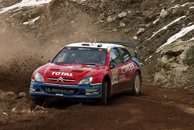
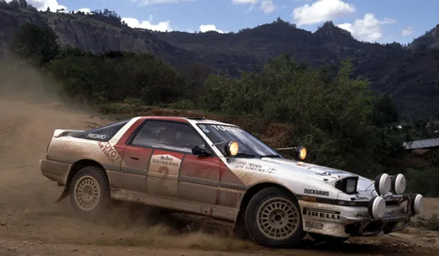
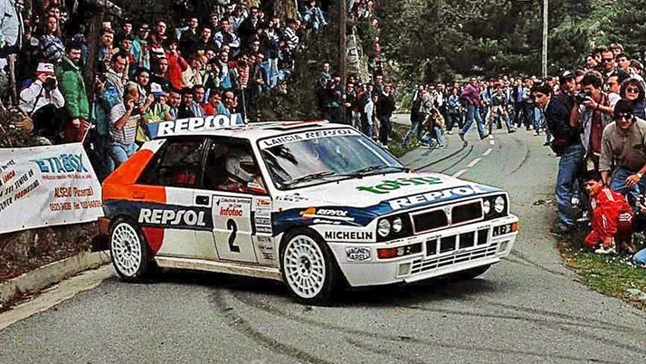
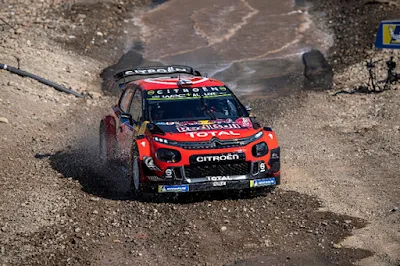
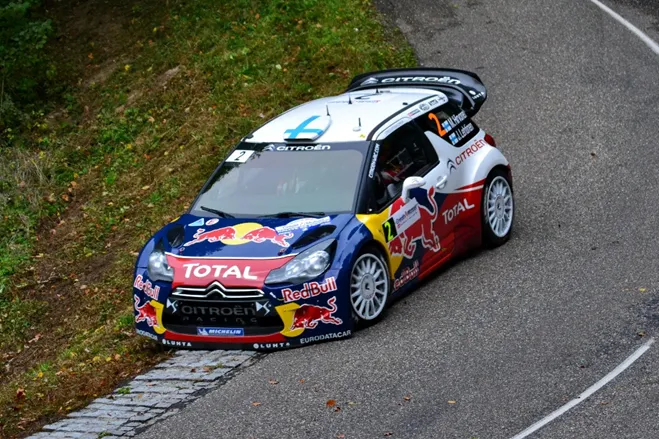
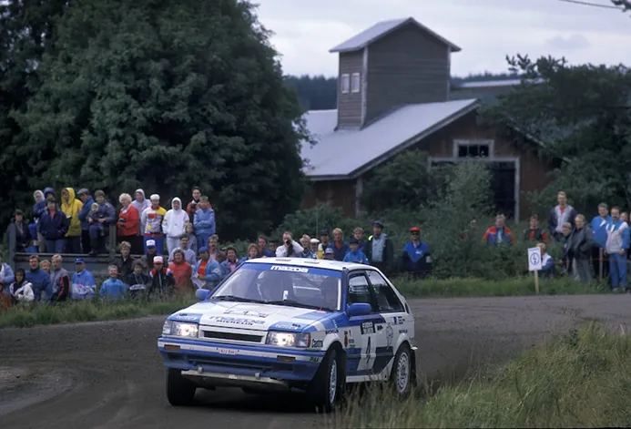
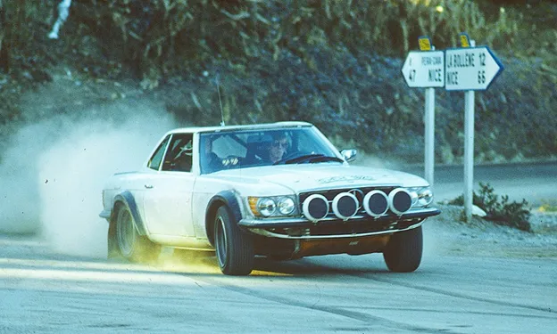

7 of the Worst WRC Driver Moves
The silly season in the WRC is something many look forward to. This year’s silly season has been fairly quiet so far, with not many, if any, rumours about drivers changing teams for 2024. Some driver changes turn out to be fairytales, like Sebastien Ogier’s move to Volkswagen for 2013, a partnership that won 4 drivers and 4 constructors’ championships. But many can be the stuff of nightmares. So here are 7 of the worst driver changes in the WRC.
1. Colin McRae to Citroen – 2003

Colin McRae left Ford after 2002, after M-Sport elected to cut costs and had to “regretfully elect not to renew McRae's contract when it expired”. McRae joined Citroen for 2003 in a one year contract worth up to 5 million pounds. Richard Burns had advised the Scotsman against the move, sighting his struggles with his move to Peugeot the previous year, but McRae wasn’t too fussed. Citroen had an all-star lineup in 2003, featuring Loeb, McRae and Sainz, 3 of the greatest drivers to grace our sport. The McRae-Citroen partnership started well, with McRae finishing 2nd behind teammate Loeb in the season opener, in a Citroen 1-2-3. But that would be the peak of their partnership, as this would be the only podium McRae would score in a Xsara. McRae struggled at Citroen, performing worse than his other 2 teammates who got 12 podiums and 4 wins combined. What sealed McRae’s fate was FIA ruling that for 2004, teams would only be allowed to run 2 cars, not 3, meaning Citroen would have to drop one of their drivers. And based on results and pace, the obvious choice was the Scot. That would be McRae’s last full season in the WRC, as he failed to secure a seat for 2004 (mostly due to his extravagant wage demands) and his last outings in the WRC would be 2 guest outings with Skoda in 2005 and Turkey 2006 where he replaced the injured Loeb.
2. Juha Kankkunen to Toyota – 1988

Heading to 1988 Juha Kankkunen was a 2 time WRC champion, being the first driver to win 2 titles in a row, having won in 1986 with Peugeot and 1987 with Lancia in Group B and Group A machinery respectively. For 1988 the Finn chose to leave Lancia, which was the only team with a truly competitive car at the time, and return to Toyota, where he previously drove a Celica TCT from 1983 to 1985. Kankkunen knew the Group A car Toyota were developing would need a lot of work for it to be competitive, but he wasn’t too worried. Kankkunen made his debut for Toyota in the 1988 Safari Rally, driving a Supra Turbo, where he finished 5th. The Celica made its debut on the following round in Corsica, but it was a disaster. Kankkunen failed to finish all of his remaining rounds in the 1988 season, with 3 out of the 5 DNFs being curtesy of engine failures. Kankkunen finished the season all the way down in 37th, in one of the worst title defences in the WRC. Things somewhat improved for 1989, with the Celica being a lot more competitive and Kankkunen finished 3rd in the standings. But the car was still unreliable, with the finn retiring in Portugal Greece and Finland due to mechanical issues, and suffering more in other rallies. By the time Kankkunen won his first rally with the Celica, he had decided that he was going to jump ship for 1990, going back to Lancia.
3. Carlos Sainz to Lancia – 1993

From a double world champion that joined Toyota, to a double world champion that left Toyota. Carlos Sainz won his 2 titles in 1990 and 1992 with Toyota, but decided to leave the team for Lancia for 1993. That was mainly due to a sponsorship conflict between Toyota and Repsol, who was Sainz’s personal sponsor. 1992 was Lancia’s last year as a full fledged manufacturer, and for 1993 the Deltas were run by Jolly Club. Despite Jolly Club assuring Sainz that the Delta would still be developed after 1992, that wouldn’t be the case, as the Delta only saw minor updates throughout the season, and was uncompetitive compared to the newer cars as the season wore on. Sainz would only score one podium in 1993, finishing 2nd in Acropolis. In fact, Sainz would only score points in 3 rallies, and he would finish 8th in the standings. A lowlight of his season came in San Remo, in his team’s home rally, where Sainz finished 2nd but was disqualified for using illegal fuel. His replacement at Toyota, Juha Kankkunen, would win the championship, to rub more salt in Sainz’s wound. He would leave Lancia after 1993 for Subaru.
4. Esapekka Lappi to Citroen - 2019

How about some more modern ones now ? I would argue that Lappi joining Citroen in 2019 lead to him being without a drive for 2021. I will explain myself later. Lappi was poached away from Toyota for 2019, hoping to further develop his skillset alongside Seb Ogier who also joined Citroen from M Sport for 2019. Unfortunately for EP that wouldn’t be the case. The Finn struggled with the C3, much like his teammate, and had a bad season, finishing 10th in the standings. He was behind Sordo for example, who did 5 less rallies than him. Lappi did get 3 2nd place finishes in Sweden, Finland and Turkey, but the rest of his campaign was plagued with crashes, mechanical issues and car struggles. Citroen pulled out of the WRC at the end of 2019, with Lappi finding out about it from the media. His only choice for a seat in 2020 was M Sport, and after his car burnt down in Mexico, and after the team struggled post covid, their relationship soured and it lead to him being without a drive for 2021. Thankfully, Lappi is here to stay in the present, flourishing in his new role at Hyundai.
5. Mikko Hirvonen to Citroen – 2012

Another Finn who regrets leaving their team for Citroen. Hirvonen landing a drive in a DS3 is a combination of many factors. Firstly, Ogier left Citroen to lead Volkswagen in 2013, leaving Citroen without a 2nd driver. Hirvonen had finished 2nd to Loeb in 2008, 2009 and 2011, with the finn coming really close to beating the Frenchman in 09 and 11. Hirvonen signed for Citroen wanting to see how he would fair versus Loeb in the same car. And judging from the results, he’d be better off if he stayed at Ford. Hirvonen failed to challenge for the title in 2012, finishing some 57 points behind his teammate and only won 1 rally, the penultimate rally of the season in Sardegna. (A rally that Loeb didn’t finish as someone cynical would point out). Despite Loeb retiring from full time rally at the end of 2012 things didn’t improve for Mikko. He was seen as the favourite to win in 2013, but no one could havd predicted how fast the Volkswagens would be. Hirvonen finished 4th in the standings, without a win to his name. 164 points behind Ogier, and only 3 ahead of teammate Dani Sordo. For 2014 Citroen downsized their works team to only 2 cars, and Hirvonen was given the boot. He went back to M-Sport where he would finish best of the non VWs, in his final season at the sport.
6. Timo Salonen to Mazda – 1987

After the end of Group B, the world of rallying changed to it’s core. And the changes couldn’t possibly not affect the driver with the most wins in the Group B era, Timo Salonen. Peugeot didn’t continue in the Group A era, a decision that left their drivers (namely Kankkunen, Salonen and Saby) without a seat. Saby and Kankkunen went to Lancia, but unlike his teammates, Salonen went to Mazda. Mazda had participated in the WRC with the 323 in 1986 as well, with Ingvar Carlsson and Rod Millen getting overall points with it. The partnership started in the best way, with Salonen getting the Mazda’s first win in Sweden, one of the rare occasions where a Lancia lost out on a win on merit in 1987. But unfortunately the Mazda was only good in fast gravel rallies or snow. Salonen’s win in Sweden was his only finish in 1987, not finishing any of the rest due to mechanical issues. In 1988 it was a similar story for Salonen and Mazda. Salonen finished 5th in the championship, and was fast where the car was fast, getting a 2nd place in Wales, but again the car was unreliable. In 1989, teammate Ingvar Carlsson got 2 wins, Mazda got a 1-2 in New Zealand as well due to not many manufacturers sending cars there, but Salonen again suffered, and he only finished 1 rally, finishing 2nd in the 1000 lakes rally. 1990 was Salonen’s last year at Mazda. By then the car was no longer competitive and Salonen could only manage a season high 6th place in Finland. After 1990, Salonen moved to Mitsubishi for 8 rallies across 2 seasons. Salonen was perhaps an example of Kankkunen’s quote of “Group A is for boys, Group B was for men”, perhaps not feeling the same way driving in Group A machinery.
7. Walter Rohrl to Mercedes – 1981

Walter Rohrl won his first championship in 1980 with the Fiat 131 Abarth, scoring almost double the points of Hannu Mikkola who was in 2nd. After his win, Walter Rohrl decided it was time to fulfil his long-time ambition of winning a championship with a German manufacturer. So Rohrl signed a deal with Mercedes, to partner up for the 1981 season. Mercedes had the 500 SLC as it’s rally car at the time and it was proving to be quite decent, with them getting a 1-2 in Ivory Coast and with Hannu Mikkola getting multiple podiums across 1980. For 1981, Mercedes had planned to switch to the lighter 500SL model for more performance, and had also signed Ari Vatanen to partner Rohrl. But just a few weeks after the end of the 1980 season, Daimler pulled the funding for the project, and Mercedes left the sport. That left Rohrl without a drive for the 1981 season. He competed in only 1 rally in the WRC in 1981, (he competed in many rallies in the German championship) in a privateer Porsche 911 in San Remo, where he retired with a broken gearbox. Fortunately for Rohrl, he would fulfil his dream of winning for a German manufacturer, as he won his 2nd title in 1982 with Opel. (From where he got fired instantly after his title win because of many falling outs with Opel team boss Tony Fall) And after securing the last ever constructors title for a 2WD car in 1983, Rohrl went to Audi, with whom he remained for the rest of his racing career.
All pics are from the Red Bull Content Pool


Comments